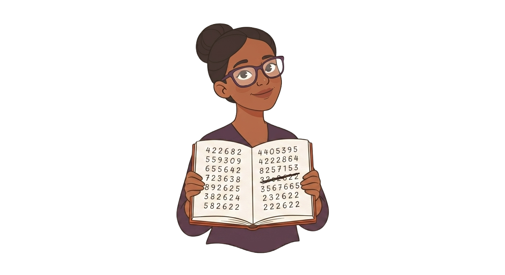
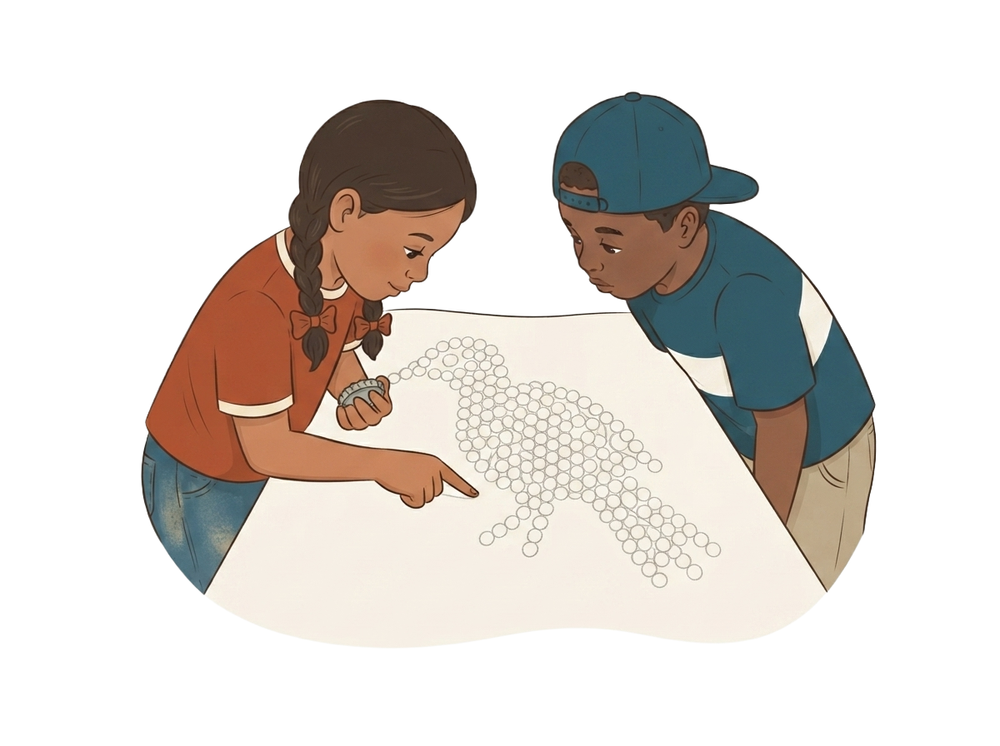
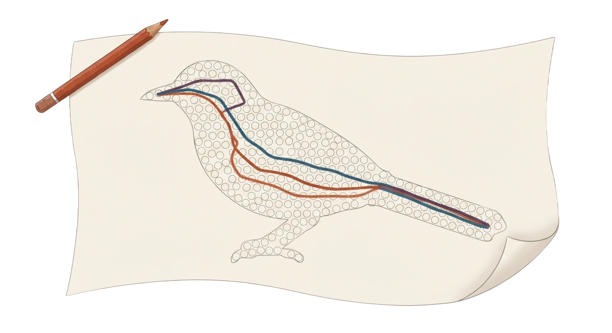

La maestra Sobeida abrió la libreta del año pasado. Ahí el mural dio dos totales distintos, y no fue por el orden.

Un conteo sin marcas se repite sin darse cuenta
El año pasado la cola dio 12. La cola tiene 11.
Una tapita recibió dos números. Tócala.
Toca un número y después su tapita, siguiendo la línea.
Toca las nueve tapitas en el orden que quieras: la ruta se va dibujando.

Desliza el comienzo y compara los dos pechos. Mira qué no cambia.
Cuenta desde cada tapita marcada y llena la tabla.
| Empecé por | Me dio |
|---|
Arma la regla en orden: toca las tres piezas, una detrás de otra.
…
Cuenta el ala entera. Después borra y cuéntala desde otra tapita.
| Intento | Empecé por | Conté |
|---|
Completa las tres líneas con tus palabras. Así queda tu método por escrito.
Construcción completada
¿Aguantará la regla el viernes, delante de todos?
